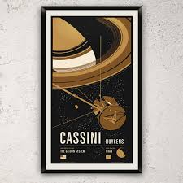

CosmoConnect Hub
Real-time public feed and microblog metrics for crew and ground command.

2 hours agoTaking a quick trip down memory lane! Stopped by the high-precision telemetry receiver array in my childhood hometown today. Unbelievable feeling to stand under this massive dish again. It’s what inspired me to get into astrophysics in the first place! 🪐🔭
{kind=link}
Reviewing spacecraft telemetry systems for the Hyperion launch. It is impossible to ignore the legends who paved the way. Of all deep space probes, the crown jewel will always be the mission featured in my profile avatar—an absolute engineering marvel that rewrote our solar textbooks! 🚀✨
@leo_sterling Hey Leo, friendly security audit reminder! I was reviewing your public GitSpace repositories and noticed you committed some diagnostic scripts that contained our internal Wayback server URL and EXIF testing credentials in the code history. Please scrub those keys!
Oh wow, absolute oversight! Good catch Sarah. I've updated the main branch and deleted those credentials from the config file on GitSpace. Security first! 👍
Ground telemetry link successfully established with Hyperion V payload receiver. Broadcasting standard calibration pulse audio signal. Mission engineers, please check the signal file for frequency modulation accuracy. 🛰️📡
GitSpace Repositories
Public developer directories and commit records for flight calibration tools.
AstroArchive Wayback
Simulate internet historical archives to lookup targets' legacy network footprints.
Wayback Web Archiver v1.42
Explore and retrieve snapshots of obsolete space-themed websites.
Find a target's old personal domain handle and enter it in the browser search bar.
Hyperion V Command Console
Secure telemetry decryption console. Requires three verification keys and active session authorization.
The ground telemetry matrix is fully decrypted. The secret payload has been successfully parsed: